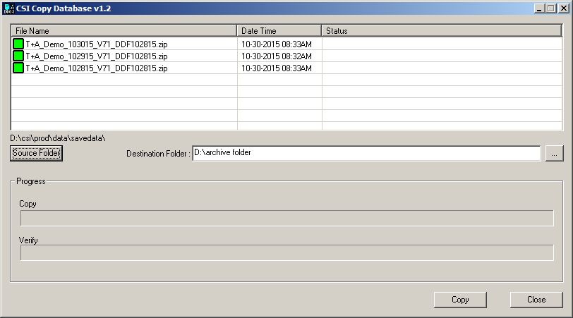
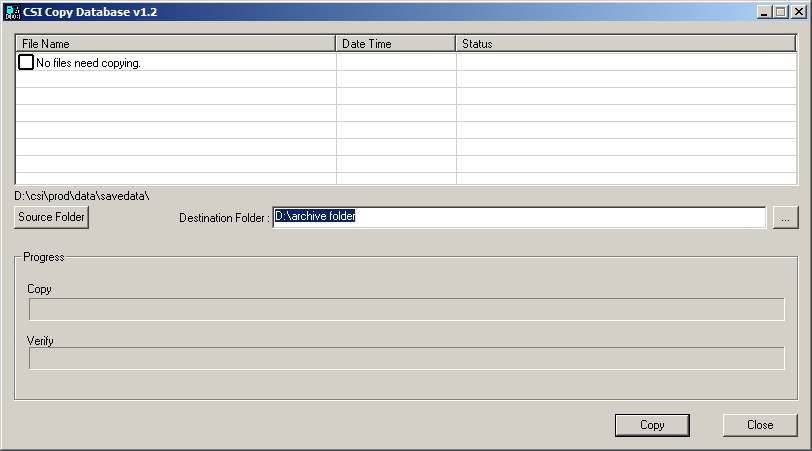
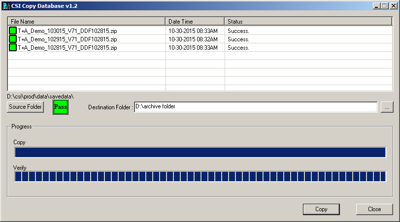

CSI Copy Database
The CSI Copy Database utility can be used to copy database backup zip files from a source folder to a destination folder. It both copies database backup files and verifies that the file was copied successfully and is valid.

Database backups that have not yet been copied to the destination folder are displayed at the top of the screen with a green box to the left of the filename. All the files with a green box next to them will be copied when the Copy process runs. To deselect a zip file from being copied, click once on the green box. Click the box a second time to reselect the zip file for being copied.
The source folder and destination folder must be set manually the first time the utility is run. The utility saves the last used source and destination paths and will default to those paths in the future (although the source and destination paths can still be manually changed if needed).
The database copy process is initiated by pressing the Copy button. When the copy process has been completed for each file, a Pass indicator will appear next to the source folder button if all the files were copied successfully. A Fail indicator will appear if any file was unable to be copied after three retries. All copied zip files will be placed in the destination folder.
When launching the CSI Copy Database utility, if there are no files to copy – perhaps because there are no zip files in the source folder that have not already been copied to the destination folder – the words “No files need copying” will appear in the Filename area of the screen. The CSI Copy Database program only shows those zip files that have not already been copied to the destination folder.

Setup Instructions
CSI Copy Database is a standalone executable located in the csi\prod\exe folder. To start the utility, simply double click on CSICopyDB.exe, or create a shortcut that points to CSICopyDB.exe and run the shortcut.
This utility is intended to be run manually at least once the first time it is used. This will ensure that the source and destination paths are set correctly and that the destination path is accessible. It can also be configured to run automatically using the CSI_Server Manager program.
Manual Procedure
This section describes how to run the CSI Copy Database program manually.
- Launch CSICopyDB.exe
- If the Source folder has not already been set, press the Source Folder button and browse to the folder where the database backups are stored (typically csi\prod\data\savedata).
- If the Destination folder has not already been set, press the “…” button and browse to the destination folder (where the zip files should be copied to).
- Press the Copy button. All the zip files found in the source folder that are indicated with a green box to the left of the filename will be copied.
- When the copy process is complete, all the copied files will have been copied to the destination folder.
The following image shows the results after successfully copying several files to the destination folder. The status is shown for each copied file and a Pass indicator is shown next to the Source Folder button.

Automatic Configuration
The CSI Copy Database program can also be configured to run automatically on a schedule by using the CSI Server Manager program.
To configure the CSI Copy Database program to run automatically on a schedule, the CSI_Server.ini file must be edited as follows:
- Using a text editor such as Notepad, open the CSI_Server.ini file. It’s typically located in the csi\prod\exe folder.
- Locate the line starting with SectionNames =
- Add a comma to the end of the existing section names followed by the name CopyDB. The end result should look something like this: SectionNames = Backup, CopyDB
- Create a new section at the end of the CSI_Server.ini file using the following fields:
[CopyDB]
Enabled = 1
WeekDays = 1111111
Interval = 86400
StartTime = 3:00am
MonthDaysToRun =
WeekNumber =
TimeSlot =
Exe = d:\CSI\Prod\Exe\CSICopyDB.exe
StartInFolder = d:\CSI\Prod\Exe
CommandLine = auto
KeepProgramRunning = 0
- Set the StartTime to be at least one hour after the automatic backup program is set to run.
- Edit the drive letters and paths for the Exe and StartInFolder as needed to match your configuration.
- Save the changed file.
By following these steps, the CSI Copy Database program will be configured to run automatically once a day at the specified start time.
Additional Details
The CSI Copy Database utility saves its settings in an .ini file called CSICopy.ini. This .ini file is created automatically when the program runs for the first time.
Activity is also logged in a file called CSICopyDB_Log.txt. This file will be created in the same folder where the CSICopyDB.exe is located unless a different location is specified in the CSICopy.ini file.
Below is an example CSICopy.ini file. The LastSourcePath and LastDestPath are set automatically and should not be manually edited. The LogFile path can be set to a different path if required.
[MainSettings]
LastSourcePath = C:\CSI\Prod\SaveData\
LastDestPath = D:\DatabaseBackups
LogFile = C:\CSI\Prod\Data\Messages